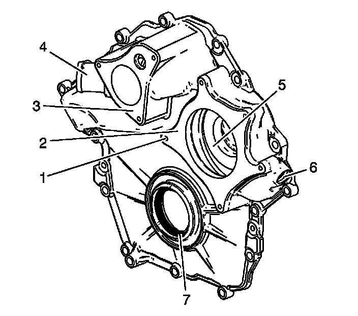
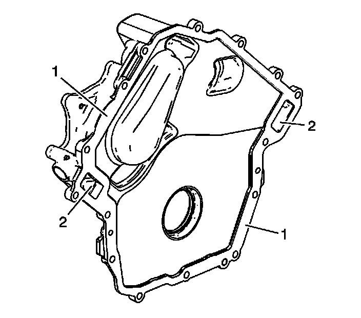

81. Engine Front Cover Cleaning and Inspection
Engine Front Cover Cleaning and Inspection
Cleaning Procedure
1. Clean the engine front cover with solvent without the solvent contacting the crankshaft front oil seal.
2. Except for the water pump, clean the other engine front cover components with solvent.
Caution: Refer to Safety Glasses Caution (Safety Glasses Warning) .
3. Dry the engine front cover components with compressed air.
Inspection Procedure

1. Inspect the exterior of the engine front cover for the following conditions:
* The engine front cover for damaged threads (1)
* The water pump gasket sealing surface (2) for damage
* The thermostat gasket sealing surface (3) for damage
* The crankshaft front oil seal (7) for damage
* Damage to the coolant passages (5)
* The water bypass hose connection (4) for damage
* The fitting threads (6) for damage

2. Inspect the interior of the engine front cover for the following conditions:
* Gouges or damage to the engine front cover sealing surface (1)
* Damage to the coolant passages (2)
3. Repair or replace the engine front cover and/or components as necessary.